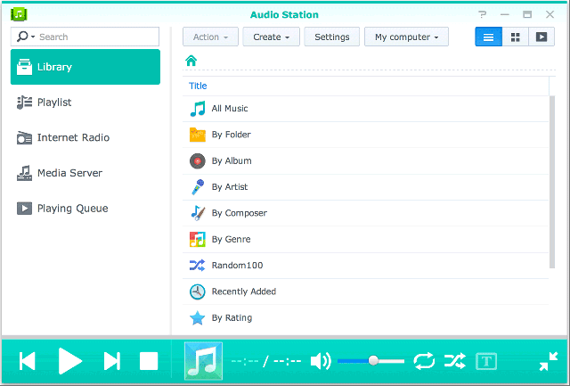
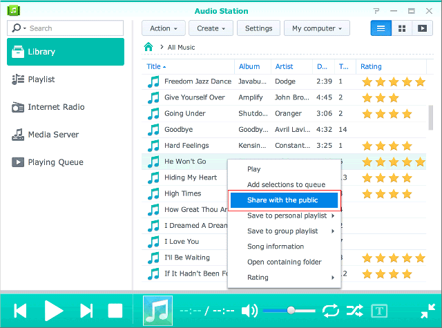

Visión general
Con Audio Station, puede organizar, explorar y reproducir la música almacenada en su Synology NAS a través de Internet. Audio Station también es compatible con una amplia selección de tipos de archivo, de manera que pueda disfrutar de su música de cualquier manera que desee. Además, tiene la opción de descargar DS audio, una aplicación móvil que complementa a Audio Station y que le permite acceder a la música de su Synology NAS esté donde esté.
1. Instalar Audio Station
- Vaya al Centro de paquetes y busque Audio Station. Haga clic en Instalar.

2. Almacenar archivos de audio en la carpeta music
- Vaya a File Station > music y haga clic en Cargar.
- Seleccione los archivos de su equipo local que desea cargar en su carpeta music.

3. Buscar música
Una vez que haya cargado los archivos, podrá reproducir y explorar su música en Audio Station. Si desea poder acceder y explorar sus archivos de música cuando no se encuentre en su red local, le recomendamos que habilite QuickConnect en Panel de control > QuickConnect. Si no dispone de una Cuenta Synology, puede configurar una en cuestión de minutos y, a continuación, asignar a su DiskStation un QuickConnect ID. Con esta opción habilitada, puede iniciar sesión en DSM y acceder a su música desde cualquier lugar. También puede utilizar su QuickConnect ID para iniciar sesión en DS Audio sin necesidad de tener que memorizar su dirección IP.
3.1 Biblioteca
La biblioteca contiene música en la carpeta compartida music o en cualquier otra carpeta indexada de su Synology NAS. En la pestaña Biblioteca, su música se organiza en categorías con el fin de ofrecerle diferentes opciones para explorar su música fácilmente según sus necesidades y preferencias. Además de esto, también le permite encontrar de manera sencilla cualquier canción que busque. Haga clic en cualquier categoría para realizar su búsqueda o seleccione la categoría en la que desea buscar del menú desplegable de la barra de búsqueda.
3.2. Modos de visualización
Los iconos situados en la esquina superior derecha de Audio Station le permiten alternar entre los distintos modos de visualización en los que puede explorar su biblioteca de música.
- Ver como lista le permite ver su música en una lista, en la que se muestra el nombre de la canción, el artista, el álbum, la duración de la canción, el número de pista y la clasificación.
- Gráficos muestra el nombre de la pista, el nombre del álbum y el material gráfico del álbum.
- Cola de reproducción muestra la lista que se está reproduciendo en pantalla completa con cubiertas de álbumes y títulos o letras de canciones.


4. Uso público compartido
La función de uso público compartido de Audio Station le permite compartir canciones de forma pública mediante un enlace que puede enviar a personas que no están en su red o no tienen Synology NAS. Cuando reciban el enlace, podrán escuchar las canciones.
4.1. Compartir canciones de forma pública
- Haga clic con el botón secundario en la canción que desea compartir y seleccione Compartir con el público. 
- Cuando se comparten canciones de forma pública, existen dos opciones:
- Si selecciona una única canción para compartir, en el cuadro de diálogo que aparece, marque la casilla junto a Compartir con el público para habilitar el enlace de compartir.
- Si selecciona varias canciones para compartir, se crea una lista de reproducción. Puede asignar un nombre a su lista de reproducción y, además, tiene la opción de establecer un periodo de validez para el enlace marcando la casilla que se encuentra junto a Personalizar periodo de validez y haciendo clic en OK.


- Copie el enlace y péguelo para la persona con la que desea compartir la lista de reproducción o haga clic en Ir al enlace para acceder al enlace directamente.
5. Organizar y reproducir música en dispositivos móviles
DS audio se ejecuta en iPad/iPhone/iPod touch, dispositivos Android y dispositivos Windows Phone. La aplicación está disponible de manera gratuita en Apple App Store, Google Play y Windows Phone Store. También puede escanear el siguiente código QR para su descarga instantánea.